As vísceras pélvicas (bexiga, reto, órgãos genitais pélvicos e parte terminal da uretra) residem na cavidade pélvica (ou na pelve verdadeira).
Esta cavidade está localizada na parte inferior da pelve, abaixo da borda pélvica.
Um número de músculos ajuda a compor as paredes da cavidade, as paredes laterais incluem o obturador interno e o músculo piriforme, com o último formando também a parede posterior.
Parede lateral
Obturador interno
Inserção Medial: Face interna da membrana obturatória e ísquio. Inserção Lateral: Trocânter maior e fossa trocantérica do fêmur. Inervação: Nervo para o músculo obturatório interno (L5 – S2). Ação: Rotação lateral da coxa.
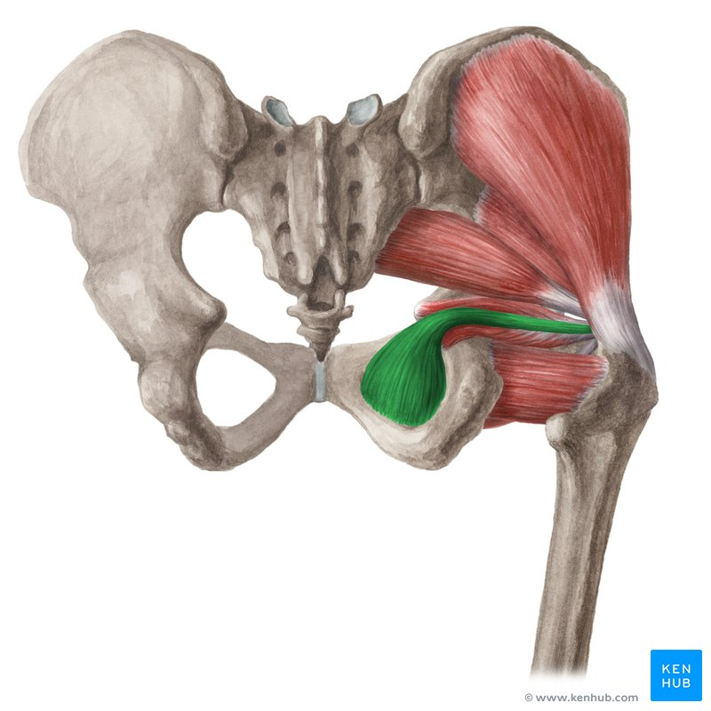
https://www.kenhub.com/
Parede póstero-superior
Piriforme
Inserção Medial: Superfície pélvica do sacro e margem da incisura isquiática maior. Inserção Lateral: Trocânter maior. Inervação: Nervo para o músculo piriforme (S2). Ação: Abdução e rotação lateral da coxa.
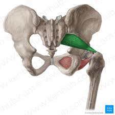
https://www.kenhub.com/
NETTER: Frank H. Netter Atlas De Anatomia Humana. 7 ed. Rio de Janeiro, Elsevier, 2021.
Assoalho pélvico
Os músculos que compõem o revestimento inferior da cavidade são os músculos do assoalho pélvico.
O assoalho pélvico é também conhecido como o diafragma pélvico.
Ao aprender sobre os músculos do assoalho pélvico, é importante ter em mente sua estrutura em forma de funil.
Existem três componentes principais do assoalho pélvico:
Músculo levantador do ânus (maior componente). Músculo Coccígeo. Coberturas de fáscia que recobrem as faces superior e inferior desses músculos.
M. levantador do ânus
O levantador do ânus é uma ampla camada de músculo.
É composto de três músculos separados:
Pubococcígeo, puborretal e iliococcígeo.
Inervação: Nervo para o M. levantador do ânus (ramos de S4), nervo anal inferior e plexo coccígeo. Ação: Forma pequena parte do diafragma da pelve que sustenta as vísceras pélvicas. Traciona o cóccix ventralmente, suportando a pressão intra-abdominal provocada contra o assoalho pélvico.
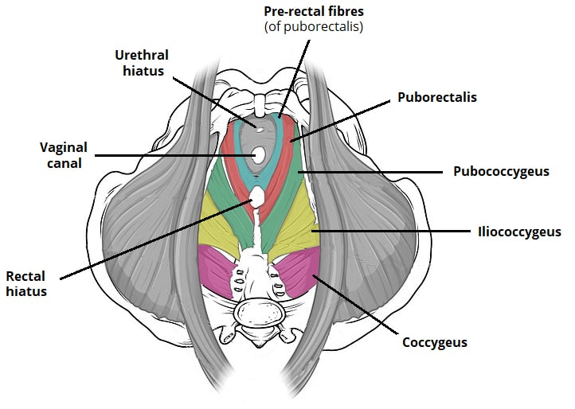
https://teachmeanatomy.info/
Iliococcígeo
Origem: Fáscia do obturador interno.
Inserção: Cóccix. Paredes da próstata ou vagina, reto e canal anal.
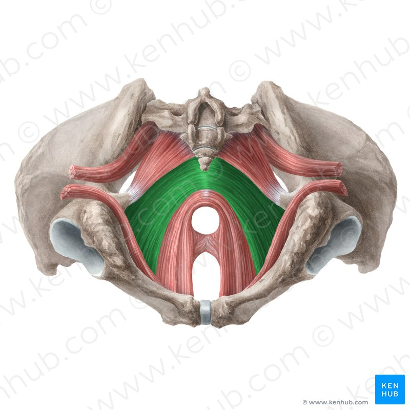
Vista inferior
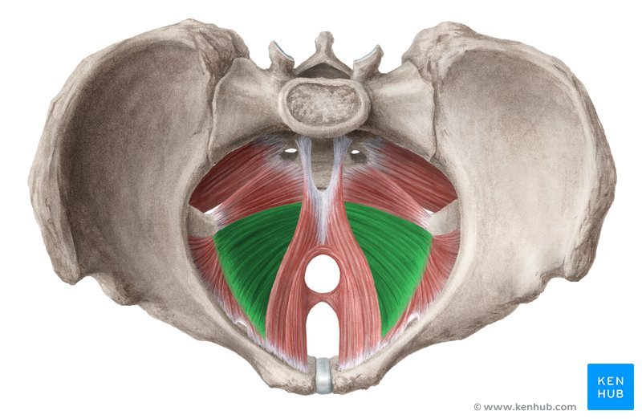
Vista superior
Pubococcígeo
Origem: Sínfise púbica.
Inserção: Arco tendinoso do períneo, corpo anococcígeo, cóccix.
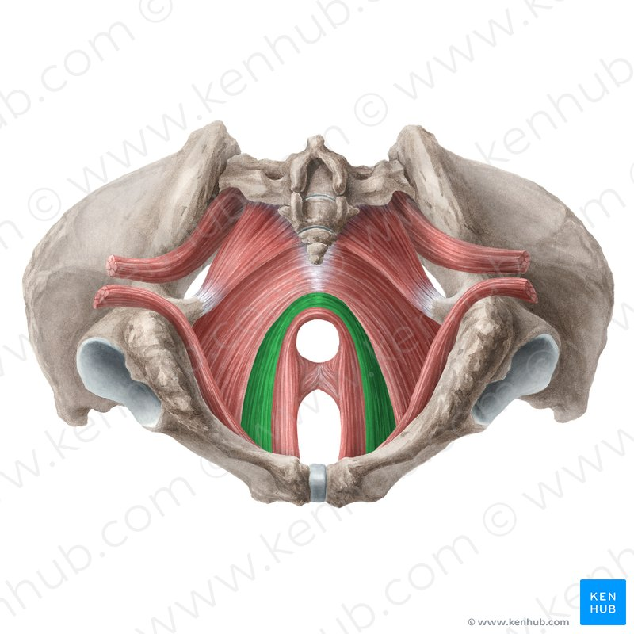
Vista inferior
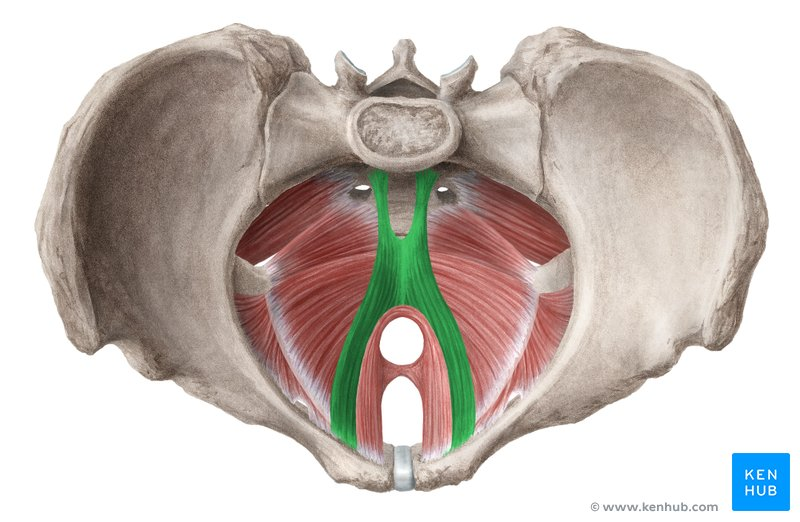
Vista superior
Puborretal
Origem: Sínfise púbica.
Inserção: Banda tendinosa posteriormente ao reto.
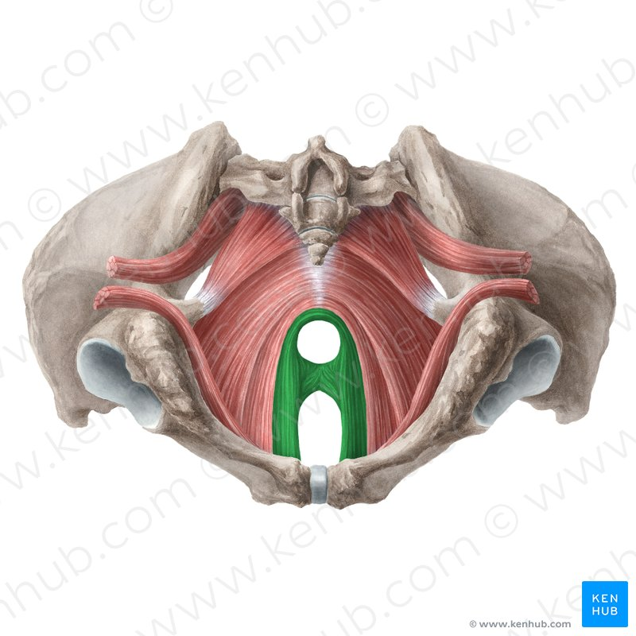
Vista inferior
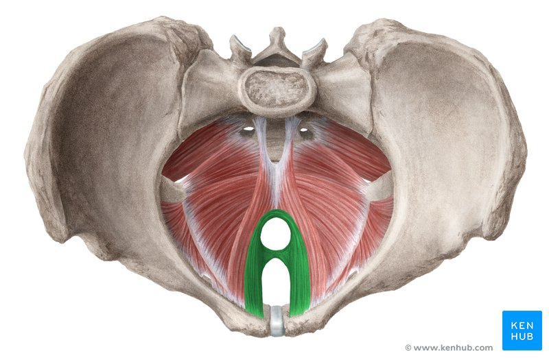
Vista superior
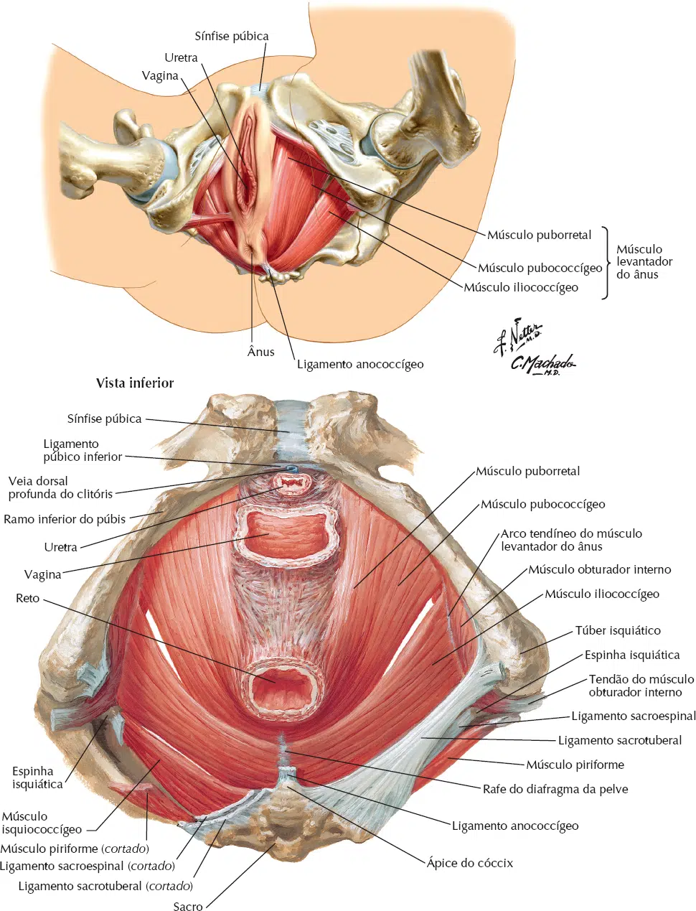
NETTER: Frank H. Netter Atlas De Anatomia Humana. 8 ed. Rio de Janeiro: Elsevier, 2024.
M. isquiococcígeo
O m. isquiococcígeo (ou coccígeo) é o menor componente e mais posterior do assoalho pélvico.
Origem: Ápice da espinha do ísquio e do ligamento sacroespinhal. Inserção: Margem do cóccix e na face lateral do sacro. Inervação: Plexo Pudendo (S4 – S5). Ação: Traciona o cóccix ventralmente, suportando a pressão intra-abdominal provocada contra o assoalho pélvico.
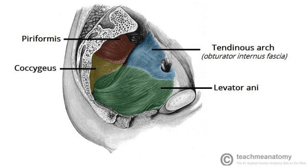
https://teachmeanatomy.info/
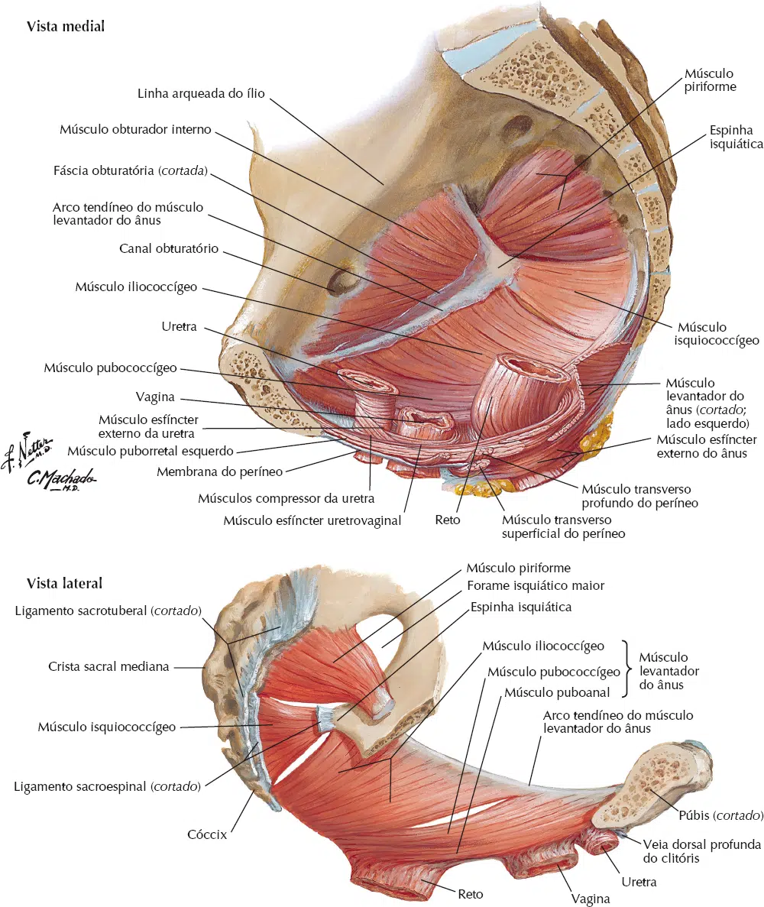
NETTER: Frank H. Netter Atlas De Anatomia Humana. 8 ed. Rio de Janeiro: Elsevier, 2024.